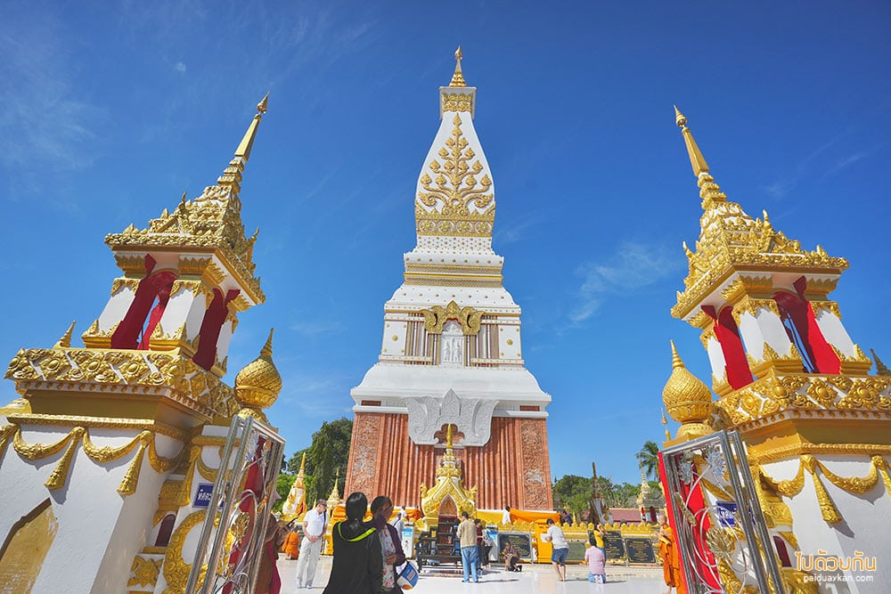
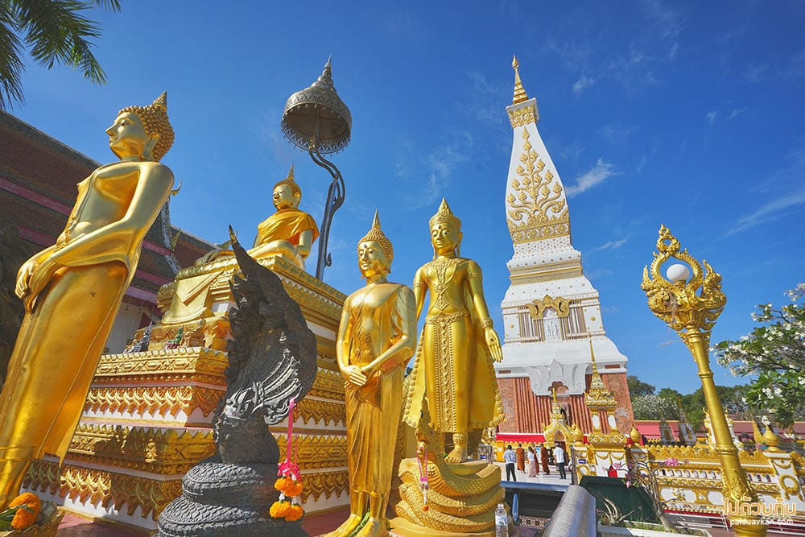

วัดพระธาตุพนมวรมหาวิหาร พระธาตุประจำปีเกิดของปีวอกและผู้ที่เกิดวันอาทิตย์ ภายในองค์พระธาตุบรรจุพระอุรังคธาตุของพระสัมมาสัมพุทธเจ้าไว้ ลักษณะของสถาปัตยกรรมมีแหล่งที่มาที่เดียวกันกับปราสาทของขอมและได้ทำการบูรณะเรื่อยมา พระธาตุพนมไม่เพียงแต่เป็นศูนย์รวมจิตใจของ ชาวนครพนมเท่านั้นยัง เป็นที่เคารพของ ชาวไทยภาคอื่น และชาวลาวอีกด้วย ว่ากันว่าถ้าใครได้มานมัสการพระธาตุครบ 7 ครั้ง จะถือว่าเป็น “ลูกพระธาตุ” เป็นสิริมงคลแก่ชีวิตและจะมีความเจริญรุ่งเรือง หรือแม้แต่ได้มากราบพระธาตุพนม 1 ครั้ง ถือเป็นมงคลแก่ชีวิตแล้ว